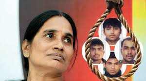
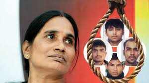
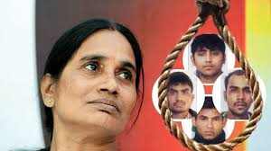

Connect with us for helping Nirbhaya

Connect with us for helping Nirbhaya
Three convicts in the 2012 gang rape and murder case might soon file a curative petition challenging the death penalty, a Delhi court was told on Saturday.; Additional Sessions Judge Anu Grover Baliga Saturday heard a plea filed by the parents of Nirbhaya seeking death warrant of four convicts without any delay.
Advocate A P Singh, counsel for the convicts, told the court that they might soon file a curative petition challenging its 2018 order dismissing their pleas for a review of its 2017 verdict which upheld the capital punishment awarded to them.The court also directed the jail authorities to file a status report in the case by April 6 -- the next date of hearing. Seeking expeditious directions, the plea said that it is the need of the hour and law that the death sentence be executed as early as possible and not delayed any further. "Not only the entire nation is awaiting the execution of the sentence awarded to the convicts, but the entire world is curiously looking at the Indian judicial system," the plea, filed through lawyer Jitendra Kumar Jha, read. On July 9 last year, the apex court had dismissed the pleas of three convicts -- Mukesh (31), Pawan Gupta (24) and Vinay Sharma (25) -- seeking review of its 2017 verdict upholding the capital punishment awarded to them by the Delhi High Court and the trial court in the case. The fourth death row convict, Akshay Kumar Singh (33), has not filed a review plea in the apex court. The apex court had in December last year dismissed a petition, seeking directions for the immediate execution of the four men convicted in the case. The 23-year-old paramedic student was raped on the intervening night of December 16-17, 2012 inside a running bus in South Delhi by six persons and severely assaulted before being thrown out on the road. She died on December 29, 2012 at Mount Elizabeth Hospital in Singapore.

Connect with us for helping Nirbhaya